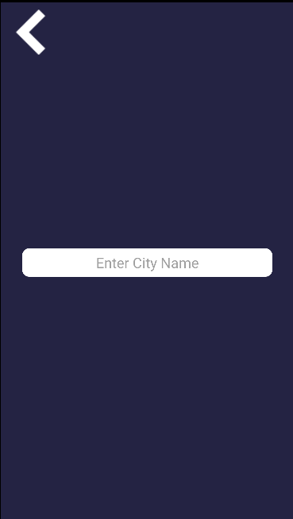
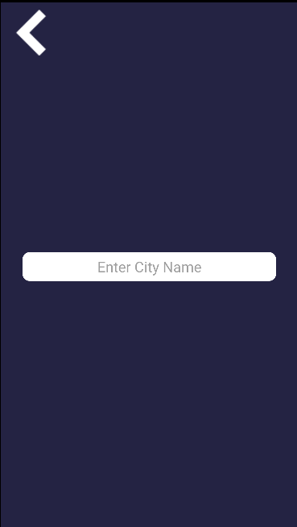

WeatherMaker
Your Weather App of choice
App
November 12, 2021
Suche dir dein Land aus und habe das Wetter immer im Griff. WeatherMaker ist dein Wetter Manager. Diese App ist simpel und clever für dich gebaut.
Über mich
Mein Name ist Alessio Carcavallo und ich arbeite für die 08EINS AG in Chur. Diese App habe ich im letzten Übergeordneten Kurs realisiert und ich würde mich freuen wenn Sie diese App herunterladen und testen würden.
 
